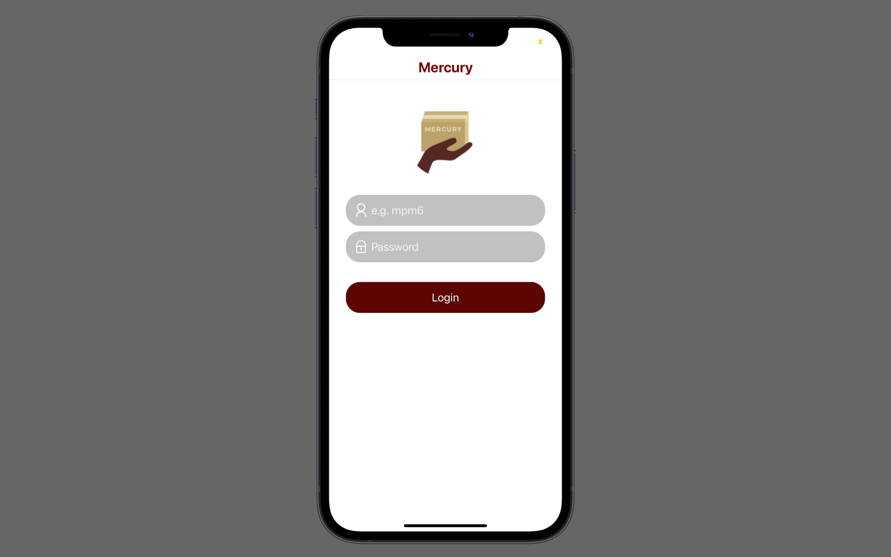

Women in Computing Web App (Ver. 2)
Built using Angular CLI and Bootsrap.
With this version, it will be easier for future generations to update and maintain.
My main goal was to make it user-friendly and informative with a clean and simple UI.

Mercury Package Manager
Built using React Native and Heroku. This was a semester long
group project using Agile scrum methodology. My main role was front-end development.
I designed and coded the majority of the UI, and I was one of the main
contacts when interacting with stakeholders.
Portfolio Web App
Built from the ground up using JS, HTML, and CSS. I decided to develop without
a framework or a CMS (like WordPress) to show that I have a solid understanding
of how to create a responsive website.
Chat App
Built using Angular CLI and Google Firestore.
This shows my understanding to store, sync, and query from a NoSQL database.
It also uses local storage to store your handle and font color, so it will persist
over many sessions.